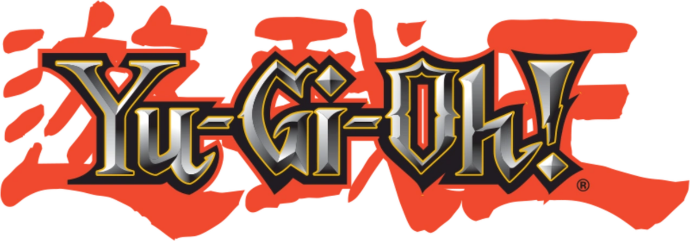

Pesquise ou adicione cartas aos favoritos!
Pesquise ou adicione cartas aos favoritos!
Yu-Gi-Oh! começou como um mangá criado por Kazuki Takahashi em 1996. A história gira em torno de Yugi Mutou, um garoto tímido que resolve enigmas e quebra-cabeças. Seu maior achado é o “Quebra-Cabeça do Milênio”, um antigo artefato egípcio que abriga o espírito de um misterioso faraó.
Quando Yugi resolve o quebra-cabeça, ele desperta o espírito do faraó, que se torna seu alter ego nos momentos de perigo. Juntos, eles enfrentam inimigos em desafios chamados “Shadow Games”, jogos com apostas misteriosas que testam coragem e inteligência.
O foco da história evolui para o Duel Monsters, um jogo de cartas estratégico. Yugi e seus amigos (Joey, Téa e Tristan) participam de torneios para derrotar vilões e proteger o mundo de ameaças sobrenaturais.
Yugi enfrenta diversos vilões ao longo das sagas: - Kaiba, que quer sempre vencê-lo. - Marik, com os Shadow Games do milênio. - Outros duelistas em torneios nacionais e internacionais. Cada duelo mistura estratégia, amizade e magia antiga.
Yu-Gi-Oh! evoluiu para anime, jogos de cartas e videogames, tornando-se uma das franquias mais populares do mundo. A história combina aventura, estratégia e o clássico lema: “Quem é o verdadeiro rei dos jogos?”